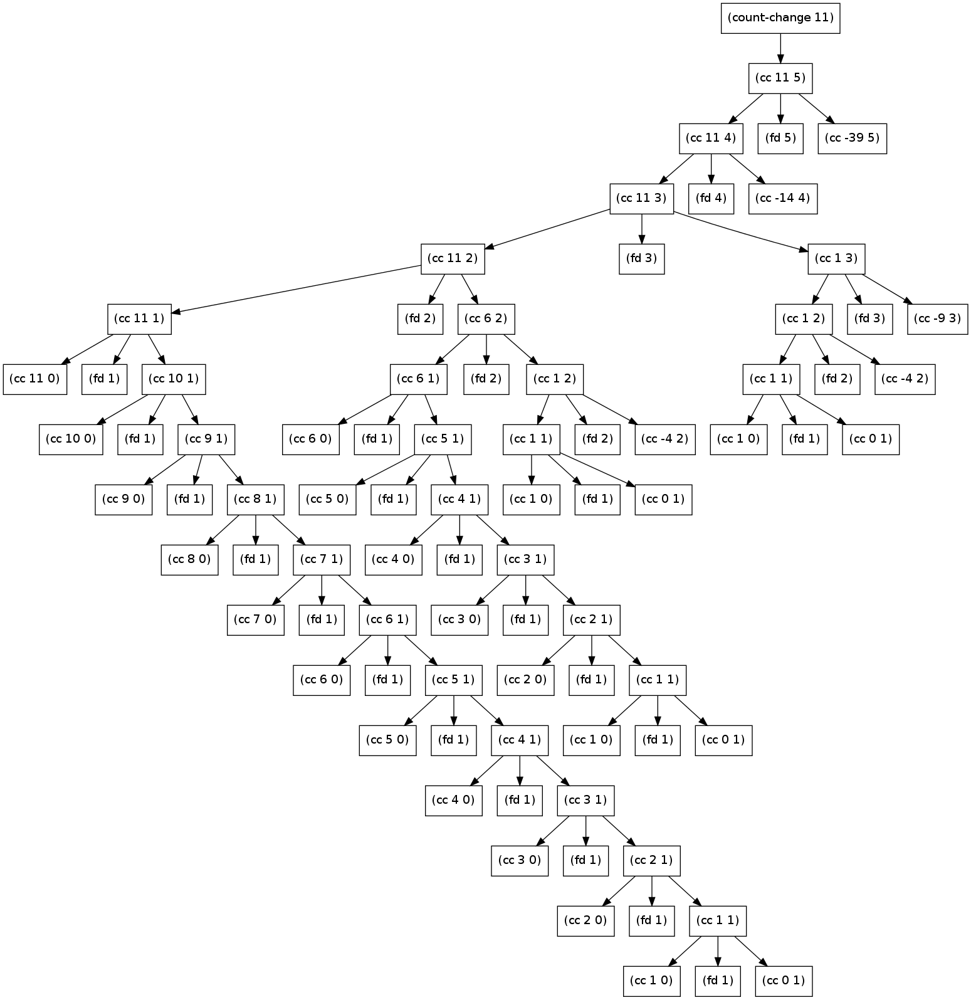

SICP Exercise Solutions for Section 1.2
Table of Contents
- 1. Section 1.2.1 Linear Recursion and Iteration
- 2. Section 1.2.2 Tree Recursion
- 3. Section 1.2.3 Orders of Growth
- 4. Section 1.2.4 Exponentiation
- 5. Section 1.2.5 Greatest Common Divisors
- 6. Section 1.2.6 Testing for Primality
- 6.1. Exercise 1.21: Using
smallest-divisor - 6.2. Exercise 1.22: Measuring runtime
- 6.3. Exercise 1.23: Speeding up
smallest-divisor - 6.4. Exercise 1.24: Putting the Fermat method to work
- 6.5. Exercise 1.25: A not-so-fast use of
fast-expt - 6.6. Exercise 1.26: A subtle slowdown in
expmod - 6.7. Exercise 1.27: Fooling Fermat with Carmichael numbers
- 6.8. Exercise 1.28: The Miller-Rabin test
- 6.1. Exercise 1.21: Using
1 Section 1.2.1 Linear Recursion and Iteration
1.1 Exercise 1.9: Thinking about procedures and processes
1.1.1 Problem
Each of the following two procedures defines a
method for adding two positive integers in terms of the procedures
inc, which increments its argument by 1, and dec, which
decrements its argument by 1.
(define (+ a b) (if (= a 0) b (inc (+ (dec a) b)))) (define (+ a b) (if (= a 0) b (+ (dec a) (inc b))))
Using the substitution model, illustrate the process generated by
each procedure in evaluating (+ 4 5). Are these processes
iterative or recursive?
1.1.2 Answer
First procedure:
(+ 4 5)
(if (= 4 0)
5
(inc (+ (dec 4) 5)))
(inc (+ (dec 4) 5))
(inc (+ 3 5))
(inc (if (= 3 5)
5
(inc (+ (dec 3) 5))))
(inc (inc (+ (dec 3) 5)))
(inc (inc (+ 2 5) ))
(inc (inc (if (= 2 5)
5
(inc (+ (dec 2) 5)))))
(inc (inc (inc (+ (dec 2) 5))))
(inc (inc (inc (+ 1 5))))
(inc (inc (inc (if (= 1 0)
5
(inc (+ (dec 1) 5))))))
(inc (inc (inc (inc (+ (dec 1) 5)))))
(inc (inc (inc (inc (+ 0 5)))))
(inc (inc (inc (inc (if (= 0 0)
5
(inc (+ (dec 0) 5)))))))
(inc (inc (inc (inc 5))))
(inc (inc (inc 6)))
(inc (inc 7))
(inc 8)
9
Second procedure:
(+ 4 5)
(if (= 4 0)
5
(+ (dec 4) (inc 5)))
(+ (dec 4) (inc 5))
(+ 3 6)
(if (= 3 0)
6
(+ (dec 3) (inc 6)))
(+ (dec 3) (inc 6))
(+ 2 7)
(if (= 2 0)
7
(+ (dec 2) (inc 7)))
(+ (dec 2) (inc 7))
(+ 1 8)
(if (= 1 0)
8
(+ (dec 1) (inc 8)))
(+ (dec 1) (inc 8))
(+ 0 9)
(if (= 0 0)
9
(+ (dec 0) (inc 9)))
9
As can be seen, the first procedure is a linear recursive process, building up deferred operations. The second is a linear iterative process.
1.2 Exercise 1.10: Ackermann's function
The following procedure computes a mathematical function called Ackermann's function.
(define (A x y)
(cond ((= y 0) 0)
((= x 0) (* 2 y))
((= y 1) 2)
(else (A (- x 1)
(A x (- y 1))))))
What are the values of the following expressions?
(A 1 10)
1024
(A 2 4)
65536
(A 3 3)
65536
Consider the following procedures, where A is the procedure
defined above:
(define (f n) (A 0 n)) (define (g n) (A 1 n)) (define (h n) (A 2 n)) (define (k n) (* 5 n n))
(define (investigate name func num)
(define (investigate-iter i)
(cond ((< i num)
(printf " ~a:~a" i (func i))
(investigate-iter (+ i 1)))
(else (newline))))
(display name)
(investigate-iter 0))
(investigate "k" k 5)
Give concise mathematical definitions for the functions computed
by the procedures f, g, and h for positive integer values of
\(n\). For example, (k n) computes \(5n^2\).
(investigate "f" f 17)
The output of f is straightforward to analyze:
$$f(n) => 2*n$$
(investigate "g" g 17)
Similarly, g is easy to identify for anyone who's been programming
for any length of time:
$$g(n) => 2^n$$
(investigate "h" h 5)
h, on the other hand, is a serious pain!
(A 2 1) => 2 (2^(2^0)) (A 2 2) => (A 1 (A 2 1)) => (A 1 2) => 4 (2^(2^1)) (2^(2^(2^0)) (A 2 3) => (A 1 (A 2 2)) => (A 1 4) => 16 (2^(2^2)) (2^(2^(2^1)) (A 2 4) => (A 1 (A 2 3)) => (A 1 16) => 65536 (2^(2^4)) (2^(2^(2^2)) (A 2 5) => (A 1 (A 2 4)) => (A 1 65536) => 20035...56736 (2^(2^16)) (2^(2^(2^4)) 2^2 ^ 2^(1) 2^3 ^ 2^2 ^ 2^1 h(1) => 2 h(2) => 2 ^ 2 h(3) => 2 ^ 2 ^ 2 h(4) => 2 ^ 2 ^ 2 ^ 2 ...
There's no standard mathematical notation for this pattern; which is commonly called a "power tower". A more formal term is tetration.
2 Section 1.2.2 Tree Recursion
2.1 Exercise 1.11: Converting a recursive process to an iterative process
2.1.1 Problem
A function f is defined by the rule that \(f(n) = n\) if \(n<3\) and \(f(n) = f(n - 1) + 2f(n - 2) + 3f(n - 3)\) if \(n>= 3\). Write a procedure that computes \(f\) by means of a recursive process. Write a procedure that computes \(f\) by means of an iterative process.
2.1.2 Answer
(define (f-rec n)
(if (< n 3)
n
(+ (f-rec (- n 1))
(* 2 (f-rec (- n 2)))
(* 3 (f-rec (- n 3))))))
(define (f-iter n)
(define (f-inner i fn1 fn2 fn3)
(define cur (+ fn1 (* 2 fn2) (* 3 fn3)))
(if (= i n)
cur
(f-inner (+ i 1) cur fn1 fn2)))
(if (< n 3)
n
(f-inner 3 2 1 0)))
(define (compare f1 f2 k)
(define (compare-iter i good?)
(define t0 (current-milliseconds))
(define r1 (f1 i))
(define t1 (current-milliseconds))
(define r2 (f2 i))
(define t2 (current-milliseconds))
(printf "~a: ~a (~a ms) ~a (~a ms) => ~a~n"
i
r1 (- t1 t0)
r2 (- t2 t1)
(= r1 r2))
(if (< i k)
(compare-iter (+ i 1) (and good? (= r1 r2)))
(and good? (= r1 r2))))
(compare-iter 1 true))
(compare f-rec f-iter 33)
1: 1 (0 ms) 1 (0 ms) => #t 2: 2 (0 ms) 2 (0 ms) => #t 3: 4 (0 ms) 4 (0 ms) => #t 4: 11 (0 ms) 11 (0 ms) => #t 5: 25 (0 ms) 25 (0 ms) => #t 6: 59 (0 ms) 59 (0 ms) => #t 7: 142 (0 ms) 142 (0 ms) => #t 8: 335 (0 ms) 335 (0 ms) => #t 9: 796 (0 ms) 796 (0 ms) => #t 10: 1892 (0 ms) 1892 (0 ms) => #t 11: 4489 (0 ms) 4489 (0 ms) => #t 12: 10661 (0 ms) 10661 (0 ms) => #t 13: 25315 (0 ms) 25315 (0 ms) => #t 14: 60104 (0 ms) 60104 (0 ms) => #t 15: 142717 (0 ms) 142717 (0 ms) => #t 16: 338870 (1 ms) 338870 (0 ms) => #t 17: 804616 (0 ms) 804616 (0 ms) => #t 18: 1910507 (1 ms) 1910507 (0 ms) => #t 19: 4536349 (1 ms) 4536349 (0 ms) => #t 20: 10771211 (2 ms) 10771211 (0 ms) => #t 21: 25575430 (4 ms) 25575430 (0 ms) => #t 22: 60726899 (8 ms) 60726899 (0 ms) => #t 23: 144191392 (13 ms) 144191392 (0 ms) => #t 24: 342371480 (26 ms) 342371480 (0 ms) => #t 25: 812934961 (46 ms) 812934961 (0 ms) => #t 26: 1930252097 (84 ms) 1930252097 (0 ms) => #t 27: 4583236459 (154 ms) 4583236459 (0 ms) => #t 28: 10882545536 (288 ms) 10882545536 (0 ms) => #t 29: 25839774745 (522 ms) 25839774745 (0 ms) => #t 30: 61354575194 (963 ms) 61354575194 (0 ms) => #t 31: 145681761292 (1821 ms) 145681761292 (0 ms) => #t 32: 345910235915 (3296 ms) 345910235915 (0 ms) => #t 33: 821337484081 (6081 ms) 821337484081 (0 ms) => #t
2.2 Exercise 1.12: Computing Pascal's triangle
2.2.1 Problem
The following pattern of numbers is called "Pascal's triangle".
1
1 1
1 2 1
1 3 3 1
1 4 6 4 1
The numbers at the edge of the triangle are all 1, and each number inside the triangle is the sum of the two numbers above it. Write a procedure that computes elements of Pascal's triangle by means of a recursive process.
2.2.2 Answer
;; Find the m-th number in the n-th row of Pascal's triangle
(define (pascal n m)
(cond ((or (> m n) (< m 1) (< n 1)) -1) ; Error condition
((or (= m 1) (= m n)) 1) ; Outer numbers
(else (+ (pascal (- n 1) (- m 1))
(pascal (- n 1) m)))))
;; Display first k rows of Pascal's triangle
(define (display-pascal k)
(define (display-pascal-inner i j)
(display (pascal i j))
(cond ((< j i) (display " ") (display-pascal-inner i (+ j 1)))
((= i k) (newline))
((= i j) (newline) (display-pascal-inner (+ i 1) 1))))
(display-pascal-inner 1 1))
(time (display-pascal 18))
1 1 1 1 2 1 1 3 3 1 1 4 6 4 1 1 5 10 10 5 1 1 6 15 20 15 6 1 1 7 21 35 35 21 7 1 1 8 28 56 70 56 28 8 1 1 9 36 84 126 126 84 36 9 1 1 10 45 120 210 252 210 120 45 10 1 1 11 55 165 330 462 462 330 165 55 11 1 1 12 66 220 495 792 924 792 495 220 66 12 1 1 13 78 286 715 1287 1716 1716 1287 715 286 78 13 1 1 14 91 364 1001 2002 3003 3432 3003 2002 1001 364 91 14 1 1 15 105 455 1365 3003 5005 6435 6435 5005 3003 1365 455 105 15 1 1 16 120 560 1820 4368 8008 11440 12870 11440 8008 4368 1820 560 120 16 1 1 17 136 680 2380 6188 12376 19448 24310 24310 19448 12376 6188 2380 680 136 17 1 cpu time: 15 real time: 15 gc time: 0
2.3 Exercise 1.13: A Fibonacci proof
2.3.1 Problem
Prove that \(\text{Fib}(n)\) is the closest integer to \(\phi^n / \sqrt{5}\), where \(\phi = (1 + \sqrt{5})/2\). Hint: Let \(\psi = (1 - \sqrt{5})/2\). Use induction and the definition of the Fibonacci numbers (see section 1.2.2) to prove that \(\text{Fib}(n) = (\phi^n - \psi^n)/\sqrt{5}\).
2.3.2 Answer
This one is pretty hairy, and requires a modicum of mathematical sophication to work through. For a proof like this (particularly when given a broad hint like this), the best approach is frequently to leap in and see where things take you.
In addition to the definition of \(\psi\) in the exercise, we also have a pointer to section 1.2.2, which gives us the definition of the Fibonacci sequence:
\[ \text{Fib}(n) = \begin{cases} 0 &\mbox{if } n=0 \\ 1 &\mbox{if } n=1 \\ \text{Fib}(n-1) + \text{Fib}(n-2) &\mbox{otherwise} \end{cases}\]
Significantly, it also gives us a couple of facts about \(\phi\) that will prove to be useful, as well:
\begin{align*} \phi &= 1 + \sqrt{5}/2 \approx 1.6180 \\ \phi^2 &= \phi + 1 \end{align*}Since this is a proof by induction, the first thing to do is to demonstrate the base cases. In this case, we have two, \(n=0\) and \(n=1\).
Starting with \(n=0\), we need to show \(\text{Fib}(0)=0\).
\[ \text{Fib}(0) = \frac{\phi^0 - \psi^0}{\sqrt{5}} = \frac{1-1}{\sqrt{5}} = \frac{0}{\sqrt{5}} = 0 \]
Easy! Now we show \(\text{Fib}(1)=1\).
\begin{align*} \text{Fib}(1) &= \frac{phi^1 - \psi^1}{\sqrt{5}} \\ &= \frac{\frac{1+\sqrt{5}}{2} - \frac{1-\sqrt{5}}{2}}{\sqrt{5}} \\ &= \frac{\frac{1 + \sqrt{5} - 1 + \sqrt{5}}{2}}{\sqrt{5}} \\ &= \frac{\frac{2\sqrt{5}}{2}}{\sqrt{5}} = \frac{\sqrt{5}}{\sqrt{5}}=1 \end{align*}These are straightforward enough. Next, we need to assume that the hypothesis holds for \(n-1\) and \(n\), and use this to show that this implies it also must hold for \(n+1\). That is, if we assume
\[\text{Fib}(n-1) = \frac{\phi^{n-1} - \psi^{n-1}}{\sqrt{5}}\]
and
\[\text{Fib}(n) = \frac{\phi^{n} - \psi^{n}}{\sqrt{5}}\]
we show that it implies that
\[\text{Fib}(n+1) = \frac{\phi^{n+1} - \psi^{n+1}}{\sqrt{5}}\]
Once again, the best thing to do is just leap in, start substituting, and see what results.
\begin{align*} \text{Fib}(n+1) &= \text{Fib}(n-1) + \text{Fib}(n) \\ &= \frac{\phi^{n-1} - \psi^{n-1}}{\sqrt{5}} + \frac{\phi^{n} - \psi^{n}}{\sqrt{5}} \\ &= \frac{\phi^{n-1} - \psi^{n-1} + \phi^n - \psi^n}{\sqrt{5}} \\ &= \frac{(\phi^n + \phi^{n-1}) - (\psi^n + \psi^{n-1})}{\sqrt{5}} \end{align*}It's at this point where the useful tidbit about \(\phi\) from the text comes in handy, that \(\phi^2 = \phi + 1\). (As a note, if would have been helpful if the exercise had mentioned that it is also the case that $ψ2 = ψ + 1$!) With these identities in hand, we can factor out \(\phi^{n-1}\) and \(\psi^{n-1}\) from the terms in the numerator and substitute accordingly.
\begin{align*} &= \frac{\phi^{n-1}(\phi + 1) - \psi^{n-1}(\psi +1)}{\sqrt{5}} \\ &= \frac{\phi^{n-1}\phi^2 - \psi^{n-1}\psi^2}{\sqrt{5}} \\ &= \frac{\phi^{n+1} - \psi^{n+1}}{\sqrt{5}} \end{align*}This concludes the inductive portion of the proof, but it doesn't get us all the way to what we were supposed to demonstrate: that, therefore, \(\text{Fib}(n)\) is the closest integer to \(\frac{\phi^n}{\sqrt{5}}\).
What would it mean for this to be the case? As the \(\text{Fib}(n)\) will always be an integer, the distance between it and the other term must be less than \(\frac{1}{2}\); if it were not the case than \(\phi^n\) would be closer to a different integer. As an edge case, the difference can't be exactly \(\frac{1}{2}\), as that would mean \(\phi^{n}\) was equally close to a second integer. We can specify algebraically using the absolute value:
\[ \left|\text{Fib}(n) - \frac{\phi^n}{\sqrt{5}}\right| < \frac{1}{2} \]
Trying out some substitutions, we can get this down to something manageable.
\[ \left|\text{Fib}(n) - \frac{\phi^n}{\sqrt{5}}\right| = \left|\frac{\phi^n - \psi^n}{\sqrt{5}} - \frac{\phi^n}{\sqrt{5}}\right| = \left|-\frac{\psi^n}{\sqrt{5}}\right| = \left|\frac{\psi^n}{\sqrt{5}}\right| \]
This lets us examine what we are trying to prove in the light of this new equivalence:
\begin{align*} \left|\text{Fib}(n) - \frac{\phi^n}{\sqrt{5}}\right| < \frac{1}{2} \\ \left|\frac{\psi^n}{\sqrt{5}}\right| < \frac{1}{2} \\ \left|\psi^n\right\| < \frac{\sqrt{5}}{2} \end{align*}We can see that \[\frac{\sqrt{5}}{2} \approx 1.11803\] and by definition, \[\psi = \frac{1 - \sqrt{5}}{2} \approx -0.61803\]
Raising a real number \(n\neq 0\) in the range \(-1 < n < 1\) to a positive integer power can never result in a value that is outside that range. Thus, it can never exceed \(\frac{\sqrt{5}}{2}\), since the latter is greater than one. This is sufficient to demonstrate that \(\text{Fib}(n)\) is the closest integer to \(\phi^n\).
\(\square\)
3 Section 1.2.3 Orders of Growth
3.1 TODO Exercise 1.14: Counting change
3.1.1 Problem
Draw the tree illustrating the process generated by the
count-change procedure of section *Note 1-2-2:: in making
change for 11 cents. What are the orders of growth of the space
and number of steps used by this process as the amount to be
changed increases?
3.1.2 Answer
First, we'll setup some tooling to output to GraphViz's dot
format. This could be done in more complex (and interesting) ways, but
this tries to stick as closely as possible to the Scheme features that
have been discussed in the book so far. The additional features used
are format and printf (for displaying output) and random for
creating a sort-of-unique ID. If we were to just use the information
available in a procedure (that is, its name and the parameters with
which it was called), we wouldn't have a tree, as multiple calls to
the same procedure with the same parameters would be collapsed.
(define (random-id) (random 5000000)) (define (make-name str) ;; Append random number to given string for a hopefully unique node ;; name. This isn't perfect, as there is a small possibility that ;; IDs could be repeated. As we aren't using assignment yet, this ;; is probably good enough. (format "~a_~a" str (random-id))) (define (dot-node name label) (printf " ~a [shape=box,label=\"~a\"];~n" name label)) (define (dot-edge parent child) (printf " ~a -> ~a;~n" parent child))
Now, the code itself with the above instrumentation included.
(define (count-change amount)
(define name (make-name "count_change"))
(dot-node name (format "(count-change ~a)" amount))
(cc amount 5 name))
(define (cc amount kinds-of-coins parent)
(define name (make-name "cc"))
(dot-node name (format "(cc ~a ~a)" amount kinds-of-coins))
(dot-edge parent name)
(cond ((= amount 0) 1)
((or (< amount 0) (= kinds-of-coins 0)) 0)
(else (+ (cc amount
(- kinds-of-coins 1)
name)
(cc (- amount
(first-denomination kinds-of-coins name))
kinds-of-coins
name)))))
(define (first-denomination kinds-of-coins parent)
(define name (make-name "fd"))
(dot-node name (format "(fd ~a)" kinds-of-coins))
(dot-edge parent name)
(cond ((= kinds-of-coins 1) 1)
((= kinds-of-coins 2) 5)
((= kinds-of-coins 3) 10)
((= kinds-of-coins 4) 25)
((= kinds-of-coins 5) 50)))
(count-change 11)

3.2 Exercise 1.15: Approximating sine
The sine of an angle (specified in radians) can be computed by making use of the approximation \(\sin x\approx x\) if \(x\) is sufficiently small, and the trigonometric identity
$$\sin x = 3\sin\frac{x}{3} - 4\sin^3\frac{x}{3}$$
to reduce the size of the argument of \(sin\). (For purposes of this exercise an angle is considered "sufficiently small" if its magnitude is not greater than 0.1 radians.) These ideas are incorporated in the following procedures:
(define (cube x) (* x x x))
(define (p x)
;; (Modified to show calls to p)
(printf "(p ~a)~n" x)
(- (* 3 x) (* 4 (cube x))))
(define (sine angle)
(if (not (> (abs angle) 0.1))
angle
(p (sine (/ angle 3.0)))))
3.2.1 a.
How many times is the procedure p applied when (sine 12.15) is
evaluated?
(sine 12.15)
(p 0.049999999999999996) (p 0.1495) (p 0.4351345505) (p 0.9758465331678772) (p -0.7895631144708228)
5 calls to p.
3.2.2 b.
What is the order of growth in space and number of steps (as a
function of a) used by the process generated by the sine
procedure when (sine a) is evaluated?
Logarithms answer, more or less, the question "how many times can I divide one number by another?" The second number is the base. So, consider log base 2 of 8: 8/2=4, 4/2=2, 2/2=1; thus, \(\log_2 8 = 3\).
The actual definition is that the log of a number is the exponent to which the base must be raised to equal that number. Thus, since \(2^3 = 8\), then \(\log_2 8 = 3\).
As can be seen by the single call to p in the body of sine, each
recursive call reduces angle by a factor of 3; thus, p is going to
be of \(\theta(\log n)\). (The specific logarithmic base is effectively
a constant, so all logarithmic processes are considered to be of them
same order of computational complexity.)
4 Section 1.2.4 Exponentiation
4.1 Exercise 1.16: Iterative exponentiation in logarithmic time
4.1.1 Problem
Design a procedure that evolves an iterative exponentiation
process that uses successive squaring and uses a logarithmic
number of steps, as does fast-expt. (Hint: Using the
observation that \((b^{n/2})^2 = (b^2)^{n/2}\), keep, along with
the exponent \(n\) and the base \(b\), an additional state variable
\(a\), and define the state transformation in such a way that the
product \(ab^n\) is unchanged from state to state. At the
beginning of the process \(a\) is taken to be 1, and the answer is
given by the value of \(a\) at the end of the process. In general,
the technique of defining an "invariant quantity" that remains
unchanged from state to state is a powerful way to think about
the design of iterative algorithms.)
4.1.2 Answer
Here's the code from the section for the original fast-expt
algorithm.
(define (square n)
(* n n))
(define (even? n)
(= (remainder n 2) 0))
(define (fast-expt b n)
(cond ((= n 0) 1)
((even? n) (square (fast-expt b (/ n 2))))
(else (* b (fast-expt b (- n 1))))))
Note that the even? case in the cond is building up calls to
square and the else is building up calls to *. The stack
of calls to fast-expt keeps building up until it bottoms out
with the first case, after which all of the pending computations
can be rolled back up.
This problem is to switch from this from a logarithmic recursive process to a logarithmic iterative process.
(define (fast-expt-2 b n)
(define (fast-expt-iter b n a)
(cond ((= n 0) a)
((even? n) (fast-expt-iter (square b) (/ n 2) a))
(else (fast-expt-iter b (- n 1) (* a b)))))
(fast-expt-iter b n 1))
To evaulate this, we'll reuse the compare function used for Problem
1.11. To enable this, we wrap the calls to the text's fast-expt and
the new fast-expt-2 to take a single argument.
(define (expt-by-two n) (fast-expt 2 n)) (define (expt-by-two-2 n) (fast-expt-2 2 n)) (compare expt-by-two expt-by-two-2 20)
1: 2 (0 ms) 2 (0 ms) => #t 2: 4 (0 ms) 4 (0 ms) => #t 3: 8 (0 ms) 8 (1 ms) => #t 4: 16 (0 ms) 16 (0 ms) => #t 5: 32 (0 ms) 32 (0 ms) => #t 6: 64 (0 ms) 64 (0 ms) => #t 7: 128 (0 ms) 128 (0 ms) => #t 8: 256 (0 ms) 256 (0 ms) => #t 9: 512 (0 ms) 512 (0 ms) => #t 10: 1024 (0 ms) 1024 (0 ms) => #t 11: 2048 (0 ms) 2048 (0 ms) => #t 12: 4096 (0 ms) 4096 (0 ms) => #t 13: 8192 (0 ms) 8192 (0 ms) => #t 14: 16384 (0 ms) 16384 (0 ms) => #t 15: 32768 (0 ms) 32768 (0 ms) => #t 16: 65536 (0 ms) 65536 (0 ms) => #t 17: 131072 (0 ms) 131072 (0 ms) => #t 18: 262144 (0 ms) 262144 (0 ms) => #t 19: 524288 (0 ms) 524288 (0 ms) => #t 20: 1048576 (0 ms) 1048576 (0 ms) => #t
As can be seen, both are extremely fast and return identical results.
4.2 Exercise 1.17: Recursive integer multiplication with square and halve
4.2.1 Problem
The exponentiation algorithms in this section are based on
performing exponentiation by means of repeated multiplication.
In a similar way, one can perform integer multiplication by means
of repeated addition. The following multiplication procedure (in
which it is assumed that our language can only add, not multiply)
is analogous to the expt procedure:
(define (mult a b)
(if (= b 0)
0
(+ a (* a (- b 1)))))
This algorithm takes a number of steps that is linear in \(b\).
Now suppose we include, together with addition, operations
double, which doubles an integer, and halve, which divides an
(even) integer by 2. Using these, design a multiplication
procedure analogous to `fast-expt' that uses a logarithmic number
of steps.
4.2.2 Answer
This is a straightforward translation of the fast-expt code from the
text to the multiplication problem…the problem (and solution) have
exactly the same shape.
(define (double n) (* n 2))
(define (halve n) (/ n 2))
(define (even? n)
(= (remainder n 2) 0))
(define (fast-mult a b)
(cond ((= b 0) 0)
((even? b) (double (fast-mult a (halve b))))
(else (+ a (fast-mult a (- b 1))))))
4.3 Exercise 1.18: Iterative integer multiplication with square and halve
4.3.1 Problem
Using the results of Exercise 1.16 and Exercise 1.17, devise a procedure that generates an iterative process for multiplying two integers in terms of adding, doubling, and halving and uses a logarithmic number of steps.
4.3.2 Answer
This solution is also straightforward. The only trick part is keeping straight what needs to be added and subtracted, and from where.
(define (fast-mult-2 a b)
(define (fast-mult-iter a b c)
(cond ((= b 0) c)
((even? b) (fast-mult-iter (double a) (halve b) c))
(else (fast-mult-iter a (- b 1) (+ c a)))))
(fast-mult-iter a b 0))
4.4 Exercise 1.19: Logarithmic Fibonacci calculations
4.4.1 Problem
There is a clever algorithm for computing the Fibonacci numbers
in a logarithmic number of steps. Recall the transformation of
the state variables a and b in the fib-iter process of
section 1.2.2: \(a \leftarrow a + b\) and \(b \leftarrow a\). Call
this transformation \(T\), and observe that applying \(T\) over and
over again \(n\) times, starting with 1 and 0, produces the pair
\(\text{Fib}(n + 1)\) and \(\text{Fib}(n)\). In other words, the
Fibonacci numbers are produced by applying \(T^n\), the $n$th power
of the transformation \(T\), starting with the pair \((1,0)\). Now
consider \(T\) to be the special case of \(p = 0\) and \(q = 1\) in a
family of transformations \(T_{pq}\), where \(T_{pq}\) transforms the
pair \((a,b)\) according to \(a \leftarrow bq + aq + ap\) and \(b
\leftarrow bp + aq\). Show that if we apply such a transformation
\(T_{pq}\) twice, the effect is the same as using a single
transformation \(T_{p'q'}\) of the same form, and compute \(p'\) and
\(q'\) in terms of \(p\) and \(q\). This gives us an explicit way to
square these transformations, and thus we can compute \(T^n\) using
successive squaring, as in the fast-expt procedure. Put this
all together to complete the following procedure, which runs in a
logarithmic number of steps:
(define (fib n)
(fib-iter 1 0 0 1 n))
(define (fib-iter a b p q count)
(cond ((= count 0) b)
((even? count)
(fib-iter a
b
<??> ; compute p'
<??> ; compute q'
(/ count 2)))
(else (fib-iter (+ (* b q) (* a q) (* a p))
(+ (* b p) (* a q))
p
q
(- count 1)))))
4.4.2 Answer
Deriving the new transformation is slightly painful, and requires a lot of algebraic manipulation. The general procedure is to start with the initial transformation, apply it twice to the same inputs, and keep simplifying and reorganizing until you reach a form which is has the same structure as the transformation, which will give the new \(p'\) and \(q'\).
The form of a single transformation is
\[T_{pq}(a,b) = (bq + aq + ap, bp + aq)\]
Applying this twice gives
\begin{align*} T_{pq}\left(T_{pq}(a,b)\right) = (&(bp+aq)q + (bq+aq+ap)q + bq+aq+ap)p,\\ &(bp + aq)p + (bq + aq + ap)q) \end{align*}To make line lengths a bit shorter, we can examine the each part of the tuple separately; we'll call them \(a'\) and \(b'\). To start, we'll by simplifying \(a'\):
\begin{align*} a' &= (bp+aq)q + (bq+aq+ap)q + bq+aq+ap)p \\ &= bpq + aq^2 + bq^2 + aq^2 + apq + bpq + apq + ap^2 \\ &= 2aq^2 + 2apq + 2bpq + bq^2 + bq^2 + ap^2 \end{align*}From here, we want to move things around into a form that is "shaped like" \(bq + aq + ap\). To do this, we can note that no terms have both \(a\)s and \(b\)s, so we can pull those terms out:
\[ = b(2pq + q^2) + a(2q^2 + 2pq + p^2) \]
This gives us our \(q'\), since \(q'\) is what should be multiplied by \(b\) in the new expression:
\[ q' = 2pq + q^2 \]
This lets us split up the other expression into its \(p'\) and \(q'\) components:
\begin{align*} a' &= b(2pq + q^2) + a(q^2 + q^2 + 2pq + p^2) \\ &= b(2pq + q^2) + a(2pq + q^2) + a(q^2 + p^2) \end{align*}Sure enough, this gives us a value for \(p'\), as well:
\[ p' = q^2 + p^2 \]
We can double-check this by making sure we get the same results for \(b'\):
\begin{align*} b' &= (bp + aq)p + (bq + aq ap)q \\ &= bp^2 + apq + bq^2 + aq^2 + apq \\ &= aq^2 + 2apq + bq^2 + bp^2 \\ &= a(q^2 + 2pq) + b(q^2 + p^2) \end{align*}This matches up exactly. Thus, the double-application of Tpq is identical to Tp'q', where \(p' = q^2 + p^2\) and \(q' = 2pq + q^2\). With that done, we just need to plug these formulae into the template provided by the exercise.
(define (fib-t n)
(fib-iter 1 0 0 1 n))
(define (fib-t-iter a b p q count)
(cond ((= count 0) b)
((even? count)
(fib-t-iter a
b
(+ (square q) (square p))
(+ (* 2 p q) (square q))
(/ count 2)))
(else (fib-t-iter (+ (* b q) (* a q) (* a p))
(+ (* b p) (* a q))
p
q
(- count 1)))))
5 Section 1.2.5 Greatest Common Divisors
5.1 TODO Exercise 1.20: Revisiting applicative order and normal order
5.1.1 Problem
The process that a procedure generates is of course dependent on
the rules used by the interpreter. As an example, consider the
iterative gcd procedure given above. Suppose we were to
interpret this procedure using normal-order evaluation, as
discussed in section 1.1.5. (The normal-order-evaluation rule
for if is described in Exercise 1.5.) Using the substitution
method (for normal order), illustrate the process generated in
evaluating (gcd 206 40) and indicate the remainder
operations that are actually performed. How many remainder
operations are actually performed in the normal-order evaluation
of (gcd 206 40)? In the applicative-order evaluation?
5.1.2 Answer
Recall that for applicative order, arguments are first evaluated, then the procedure is applied. For normal order, everything is fully expanded before the arguments are evaluated.
6 Section 1.2.6 Testing for Primality
6.1 Exercise 1.21: Using smallest-divisor
6.1.1 Problem
Use the smallest-divisor procedure to find the smallest divisor
of each of the following numbers: 199, 1999, 19999.
6.1.2 Answer
First, the relevant code from section 1.2.6:
(require (planet neil/sicp:1:17))
(define (square n) (* n n))
(define (smallest-divisor n)
(find-divisor n 2))
(define (find-divisor n test-divisor)
(cond ((> (square test-divisor) n) n)
((divides? test-divisor n) test-divisor)
(else (find-divisor n (+ test-divisor 1)))))
(define (divides? a b)
(= (remainder b a) 0))
(define (prime? n)
(= n (smallest-divisor n)))
(smallest-divisor 199)
199
(smallest-divisor 1999)
1999
(smallest-divisor 19999)
7
6.2 Exercise 1.22: Measuring runtime
6.2.1 Problem
Most Lisp implementations include a primitive called `runtime' that returns an integer that specifies the amount of time the system has been running (measured, for example, in microseconds). The following `timed-prime-test' procedure, when called with an integer n, prints n and checks to see if n is prime. If n is prime, the procedure prints three asterisks followed by the amount of time used in performing the test.
;; This code has been tweaked slightly to return true/false so
;; the return value can be used in tests. Also, only displays
;; output for prime numbers.
(define (timed-prime-test n)
;(display n)
;(display " ")
(start-prime-test n (runtime)))
(define (start-prime-test n start-time)
(if (prime? n)
(report-prime n (- (runtime) start-time))
false))
(define (report-prime prime elapsed-time)
(display prime)
(display " *** ")
(display elapsed-time)
(newline)
true)
Using this procedure, write a procedure `search-for-primes' that checks the primality of consecutive odd integers in a specified range. Use your procedure to find the three smallest primes larger than 1000; larger than 10,000; larger than 100,000; larger than 1,000,000. Note the time needed to test each prime. Since the testing algorithm has order of growth of [theta]([sqrt](n)), you should expect that testing for primes around 10,000 should take about _[sqrt](10) times as long as testing for primes around 1000. Do your timing data bear this out? How well do the data for 100,000 and 1,000,000 support the _[sqrt](n) prediction? Is your result compatible with the notion that programs on your machine run in time proportional to the number of steps required for the computation?
6.2.2 Answer
First, a procedure to scan a range of consecutive odd numbers for primality:
(define (odd? n) (= (remainder n 2) 1))
;; Find primes in range from a to b
(define (search-for-primes a b)
(if (< a b)
(cond ((odd? a)
(timed-prime-test a)
(search-for-primes (+ a 2) b))
(else
(search-for-primes (+ a 1) b)))))
;; Find the first k primes larger than n
(define (find-k-primes k n)
(if (odd? n)
(if (> k 0)
(if (timed-prime-test n)
(find-k-primes (- k 1) (+ n 2))
(find-k-primes k (+ n 2))))
(find-k-primes k (+ n 1))))
;; Starting with =, find the first k higher primes;
;; then multiply n by 10 and repeat intervals times.
(define (prime-scan k intervals n)
(find-k-primes k n)
(if (> intervals 1) (prime-scan k (- intervals 1) (* n 10))))
Using this, finding the first three primes larger than 1,000 is easy: 1,009, 1,013, and 1,019.
(find-k-primes 3 1000)
1009 *** 3 1013 *** 3 1019 *** 3
And for 10,000, 100,000, and 1,000,000::
(prime-scan 3 3 (expt 10 4))
10007 *** 8 10009 *** 8 10037 *** 8 100003 *** 25 100019 *** 25 100043 *** 26 1000003 *** 79 1000033 *** 79 1000037 *** 51
On my machine, calculating primality using this method for numbers around 104 takes about 8-9 microseconds, 105 takes about 25 microseconds, and 106 takes around 78 microseconds.
(display (* 8 (sqrt 10))) (newline) (display (* 25 (sqrt 10)))
25.298221281347036 79.05694150420949
These results match almost perfectly to the predicted execution time.
The tweaked version of prime-scan makes it easy to test this at a
broad range of magnitudes:
(prime-scan 1 13 (expt 10 4))
For a quick-and-dirty evaluation of this output, we'll munge it fast in the shell.
# Separate code block here so we can reuse these results easily in the # next exercise cut -f3 -d' '
And a quick script to churn through and verify the results against the predicted time:
echo Measured Predicted
for t in $(cut -f3 -d' '); do
if [ -n "${last}" ]; then
# dc is an ancient RPN calculator
# space pushes a number, 'v' is sqrt
# and 'p' prints the value on the top of the stack
guess=$(dc -e"${last} 10v*p")
fi
echo $t $guess
last=$t
done
| Measured | Predicted |
| 9 | |
| 25 | 27 |
| 79 | 75 |
| 278 | 237 |
| 804 | 834 |
| 2717 | 2412 |
| 8151 | 8151 |
| 15956 | 24453 |
| 50409 | 47868 |
| 159217 | 151227 |
| 507144 | 477651 |
| 1588455 | 1521432 |
| 4938960 | 4765365 |
These results continue to stay close to the predicted values which supports the analysis that run time is proportional to the number of steps required for the computation.
6.3 Exercise 1.23: Speeding up smallest-divisor
6.3.1 Problem
The `smallest-divisor' procedure shown at the start of this section does lots of needless testing: After it checks to see if the number is divisible by 2 there is no point in checking to see if it is divisible by any larger even numbers. This suggests that the values used for `test-divisor' should not be 2, 3, 4, 5, 6, …, but rather 2, 3, 5, 7, 9, …. To implement this change, define a procedure `next' that returns 3 if its input is equal to 2 and otherwise returns its input plus 2. Modify the `smallest-divisor' procedure to use `(next test-divisor)' instead of `(+ test-divisor 1)'. With `timed-prime-test' incorporating this modified version of `smallest-divisor', run the test for each of the 12 primes found in *Note Exercise 1-22::. Since this modification halves the number of test steps, you should expect it to run about twice as fast. Is this expectation confirmed? If not, what is the observed ratio of the speeds of the two algorithms, and how do you explain the fact that it is different from 2?
6.3.2 Answer
This is a little messy since we haven't had higher-order functions
introduced, yet, so here are all of the relevant functions rewritten
to use the new better-smallest-divisor procedure.
(define (next test-divisor)
(if (= test-divisor 2)
3
(+ test-divisor 2)))
(define (better-smallest-divisor n)
(better-find-divisor n 2))
(define (better-find-divisor n test-divisor)
(cond ((> (square test-divisor) n) n)
((divides? test-divisor n) test-divisor)
(else (better-find-divisor n (next test-divisor)))))
(define (better-prime? n)
(= n (better-smallest-divisor n)))
(define (better-timed-prime-test n)
;(display n)
;(display " ")
(better-start-prime-test n (runtime)))
(define (better-start-prime-test n start-time)
(if (better-prime? n)
(report-prime n (- (runtime) start-time))
false))
(define (better-find-k-primes k n)
(if (odd? n)
(if (> k 0)
(if (better-timed-prime-test n)
(better-find-k-primes (- k 1) (+ n 2))
(better-find-k-primes k (+ n 2))))
(better-find-k-primes k (+ n 1))))
;; Starting with =, find the first k higher primes;
;; then multiply n by 10 and repeat intervals times.
(define (better-prime-scan k intervals n)
(better-find-k-primes k n)
(if (> intervals 1) (better-prime-scan k (- intervals 1) (* n 10))))
Here are the 12 primes that are specified in the exercise:
(better-prime-scan 3 3 (expt 10 4))
10007 *** 3 10009 *** 3 10037 *** 3 100003 *** 9 100019 *** 9 100043 *** 9 1000003 *** 28 1000033 *** 28 1000037 *** 28
These results are very close to those for the original version…but, since these magnitudes are quite small relative to numbers that would have been expensive to calculate in 1996 (when SICP 2ed was published), it's difficult to differentiate. More useful is comparing at larger magnitudes:
(better-prime-scan 1 13 (expt 10 4))
10007 *** 5 100003 *** 15 1000003 *** 49 10000019 *** 151 100000007 *** 479 1000000007 *** 1519 10000000019 *** 4891 100000000003 *** 14766 1000000000039 *** 27112 10000000000037 *** 85590 100000000000031 *** 271503 1000000000000037 *** 855910 10000000000000061 *** 2741465
cut -f3 -d' '
(mapcar* 'append first second)
The first column is the original figures, and the second is the
better-* version (it's a bit fussy to get the headers added into an
org-babel block that combines two sets of output). These results at
larger scales make the improved running time obvious.
6.4 Exercise 1.24: Putting the Fermat method to work
6.4.1 Problem
Modify the timed-prime-test procedure of Exercise 1.22
to use fast-prime? (the Fermat method), and test each of the 12
primes you found in that exercise. Since the Fermat test has
\(\theta \log n\)) growth, how would you expect the time to test
primes near 1,000,000 to compare with the time needed to test
primes near 1000? Do your data bear this out? Can you explain
any discrepancy you find?
6.4.2 Answer
First, the code from Section 1.2.6. Since we're pushing the input size
larger than 4294967087, we can't use Racket's built-in random, so an
external library from Planet (Racket's package repository) is used
that does not cap the range (williams/science/random-source).
(require (planet williams/science/random-source))
(define (expmod base exp m)
(cond ((= exp 0) 1)
((even? exp)
(remainder (square (expmod base (/ exp 2) m))
m))
(else
(remainder (* base (expmod base (- exp 1) m))
m))))
(define (fermat-test n)
(define (try-it a)
(= (expmod a n n) a))
(try-it (+ 1 (random-integer (- n 1)))))
(define (fast-prime? n times)
(cond ((= times 0) true)
((fermat-test n) (fast-prime? n (- times 1)))
(else false)))
Now, we need to modify the relevant procedures to use fast-prime?.
(define (fast-timed-prime-test n times)
(fast-start-prime-test n times (runtime)))
(define (fast-start-prime-test n times start-time)
(if (fast-prime? n times)
(report-prime n (- (runtime) start-time))
false))
(define (fast-find-k-primes k n times)
(if (odd? n)
(if (> k 0)
(if (fast-timed-prime-test n times)
(fast-find-k-primes (- k 1) (+ n 2) times)
(fast-find-k-primes k (+ n 2) times)))
(fast-find-k-primes k (+ n 1) times)))
(define (fast-prime-scan k intervals n times)
(fast-find-k-primes k n times)
(if (> intervals 1) (fast-prime-scan k (- intervals 1) (* n 10) times)))
Using 10 tests is super-fast:
(fast-prime-scan 1 28 (expt 10 3) 10)
1009 *** 27 10007 *** 27 100003 *** 30 1000003 *** 35 10000019 *** 42 100000007 *** 47 1000000007 *** 52 10000000019 *** 431 100000000003 *** 467 1000000000039 *** 662 10000000000037 *** 504 100000000000031 *** 333 1000000000000037 *** 362 10000000000000061 *** 385 100000000000000003 *** 427 1000000000000000003 *** 425 10000000000000000051 *** 445 100000000000000000039 *** 10719 1000000000000000000117 *** 11862 10000000000000000000009 *** 11956 100000000000000000000117 *** 12132 1000000000000000000000007 *** 14719 10000000000000000000000013 *** 13153 100000000000000000000000067 *** 15327 1000000000000000000000000103 *** 15774 10000000000000000000000000331 *** 15855 100000000000000000000000000319 *** 15625 1000000000000000000000000000057 *** 19173
For a while, the increases in running time to appear to be more-or-less logarithmic: each power of ten increase in the input results in an increase to the running time of around 3-6 milliseconds.
There is some oddities, though: the jump in execution time between
109 and 1010, which jumps up by almost an order of magnitude, and
the jump between 1019 and 1020, which multiplies the running time by
around 25! A bit of thought reveals that a significant number occurs
in the first range: 4294967087, which was the maximum integer that
could be returned by Racket's random. Thus, we can guess that there
may be a transparent promotion to a different internal representation
that happens around that point, resulting in much higher constant
costs to each operation. Presumably, a similar (and much for
expensive) overflow happens at the higher threshold.
In the middle range, runtimes increase by around 20-60 milliseconds per power of ten increase to the inputs, which seems to confirm the prediction of logarithmic running time. In the upper range (1020 and higher), the numbers are a bit messier but the general trend of slow increase continues.
A simple improvement to the fidelity of these numbers could be made by testing multiple primes in each range, rather than just the first one found.
6.5 Exercise 1.25: A not-so-fast use of fast-expt
6.5.1 Problem
Alyssa P. Hacker complains that we went to a lot of extra work in
writing expmod. After all, she says, since we already know how
to compute exponentials, we could have simply written
(define (bad-expmod base exp m) (remainder (fast-expt base exp) m))
Is she correct? Would this procedure serve as well for our fast prime tester? Explain.
6.5.2 Answer
First, recall the relevant supporting code:
(define (square n)
(* n n))
(define (even? n)
(= (remainder n 2) 0))
(define (fast-expt b n)
(cond ((= n 0) 1)
((even? n) (square (fast-expt b (/ n 2))))
(else (* b (fast-expt b (- n 1))))))
And compare the problem's definition of expmod with the one used for
Section 1.24:
(define (expmod base exp m)
(cond ((= exp 0) 1)
((even? exp)
(remainder (square (expmod base (/ exp 2) m))
m))
(else
(remainder (* base (expmod base (- exp 1) m))
m))))
The final result of both the original expmod and Alyssa's
bad-expmod will be the same: they both calculate \(base^{exp} \mod
m\). bad-expmod has to do a lot more work to achieve the same end,
though, as it's manipulating much longer numbers: it generates the
full exponential value before applying remainder…and remainder
gets put through the wringer as it must divide that very large number
by m. The original expmod, on the other hand, applies remainder
at every step of the way, keeping the number in the range where it
is both useful and easier to manipulate.
To test this, we'll set up a batch of procedures to use bad-expmod.
(define (bad-fermat-test n)
(define (try-it a)
(= (bad-expmod a n n) a))
(try-it (+ 1 (random-integer (- n 1)))))
(define (bad-prime? n times)
(cond ((= times 0) true)
((bad-fermat-test n) (bad-prime? n (- times 1)))
(else false)))
(define (bad-timed-prime-test n times)
(bad-start-prime-test n times (runtime)))
(define (bad-start-prime-test n times start-time)
(if (bad-prime? n times)
(report-prime n (- (runtime) start-time))
false))
(define (bad-find-k-primes k n times)
(if (odd? n)
(if (> k 0)
(if (bad-timed-prime-test n times)
(bad-find-k-primes (- k 1) (+ n 2) times)
(bad-find-k-primes k (+ n 2) times)))
(bad-find-k-primes k (+ n 1) times)))
(define (bad-prime-scan k intervals n times)
(bad-find-k-primes k n times)
(if (> intervals 1) (bad-prime-scan k (- intervals 1) (* n 10) times)))
Here are some values for fast-prime? using the original expmod,
using a small number of tests (just 10):
(fast-prime-scan 1 4 100 10)
101 *** 79 1009 *** 20 10007 *** 26 100003 *** 30
Barely any time at all, on the order of 10 microseconds. The new
bad-expmod approach, however, does indeed live up to the name:
(bad-prime-scan 1 4 100 10)
101 *** 264 1009 *** 596 10007 *** 18598 100003 *** 634653
For even an input as small as 105, the runtime is already nearing a second! This exercise is a great demonstration of potentially difficult to notice computation complexity bottlenecks, and the importance of picking the right algorithm for the job.
6.6 Exercise 1.26: A subtle slowdown in expmod
Louis Reasoner is having great difficulty doing Exercise
1-24. His fast-prime? test seems to run more slowly than
his prime? test. Louis calls his friend Eva Lu Ator over to
help. When they examine Louis's code, they find that he has
rewritten the expmod procedure to use an explicit
multiplication, rather than calling square:
(define (slow-expmod base exp m)
(cond ((= exp 0) 1)
((even? exp)
(remainder (* (slow-expmod base (/ exp 2) m)
(slow-expmod base (/ exp 2) m))
m))
(else
(remainder (* base (slow-expmod base (- exp 1) m))
m))))
"I don't see what difference that could make," says Louis. "I do." says Eva. "By writing the procedure like that, you have transformed the \(\Theta(\log n)\) process into a \(\Theta(n)\) process." Explain.
6.6.1 Answer
Once again, recall the original expmod procedure:
(define (expmod base exp m)
(cond ((= exp 0) 1)
((even? exp)
(remainder (square (expmod base (/ exp 2) m))
m))
(else
(remainder (* base (expmod base (- exp 1) m))
m))))
This is a lovely and subtle change. While appearing to be a simple
in-place substitution of a procedure, it actually changes the single
recursive call to expmod to be a tree of recursive calls, with two
recursive calls at each internal node of the tree.
The original version divides the size of \(n\) by two at each
stage…since \(n\) can only be divided by 2 at most \(\log_2 n\) times,
this gives the expected complexity. While slow-expmod also divides
the size of its argument by two, it also generates two recursive
calls, one for each half. Thus, is does not reduce the size of the
overall problem to be solved: while the tree has only \(log_2 n\)
levels, there are \(2^k\) subproblems at each level \(k\). (Level 0 has a
single problem; level 1 has \(2^1=2\) problem. Each of those two
problems generates two recursive children for \(2^2=4\) problems at
level two, and so on.
So, given \(\Theta(\log_2 2^n)\), the log and the exponential cancel each other out (by the definition of logarithm, and the overall complexity is \(\Theta(n)\).
6.7 Exercise 1.27: Fooling Fermat with Carmichael numbers
6.7.1 Problem
Demonstrate that the Carmichael numbers listed in Footnote
1.47 really do fool the Fermat test. That is, write a
procedure that takes an integer n and tests whether \(a^n\) is
congruent to \(a \mod n\) for every \(a
6.7.2 Answer
(define (verify-fermat n)
(define (verify-fermat-iter a n)
(cond ((>= a n)
true)
((= (expmod a n n) a)
(verify-fermat-iter (+ a 1) n))
(else
false)))
(verify-fermat-iter 1 n))
(define (descriptive-verify-fermat n)
(display n)
(if (verify-fermat n)
(if (prime? n)
(display ": prime and correctly passes the Fermat test")
(display ": not prime and incorrectly passes the Fermat test"))
(if (prime? n)
(display ": prime and incorrectly fails the Fermat test")
(display ": not prime and correctly fails the Fermat test")))
(newline))
(define (fermat-scan-range a b)
(descriptive-verify-fermat a)
(if (< a b)
(fermat-scan-range (+ a 1) b)))
This procedure does indeed show that the first six Carmichael numbers slip through the Fermat test.
(descriptive-verify-fermat 561) (descriptive-verify-fermat 1105) (descriptive-verify-fermat 1729) (descriptive-verify-fermat 2465) (descriptive-verify-fermat 2821) (descriptive-verify-fermat 6601)
561: not prime and incorrectly passes the Fermat test 1105: not prime and incorrectly passes the Fermat test 1729: not prime and incorrectly passes the Fermat test 2465: not prime and incorrectly passes the Fermat test 2821: not prime and incorrectly passes the Fermat test 6601: not prime and incorrectly passes the Fermat test
(fermat-scan-range 1101 1109)
1101: not prime and correctly fails the Fermat test 1102: not prime and correctly fails the Fermat test 1103: prime and correctly passes the Fermat test 1104: not prime and correctly fails the Fermat test 1105: not prime and incorrectly passes the Fermat test 1106: not prime and correctly fails the Fermat test 1107: not prime and correctly fails the Fermat test 1108: not prime and correctly fails the Fermat test 1109: prime and correctly passes the Fermat test
For a bit more fun, we can turn this into a test for Carmichael
numbers and find them ourselves. This could be much more fun with
lists, map, and filter, but we haven't had them introduced, yet,
so this sticks with printing out the relevant numbers.
(define (carmichael? n) (and (not (prime? n)) (verify-fermat n))) (define (carmichael-scan-range a b) (if (carmichael? a) (printf "~a~n" a)) (if (< a b) (carmichael-scan-range (+ a 1) b)))
Here's an example of using this to find all the Carmichael numbers under 10,000. As can be seen, the first six numbers mentioned in the text are all found using this method.
(carmichael-scan-range 1 100000)
6.8 Exercise 1.28: The Miller-Rabin test
6.8.1 Problem
One variant of the Fermat test that cannot be fooled is called
the "Miller-Rabin test" (Miller 1976; Rabin 1980). This starts
from an alternate form of Fermat's Little Theorem, which states
that if \(n\) is a prime number and \(a\) is any positive integer
less than \(n\), then \(a\) raised to the \((n - 1)\)st power is
congruent to 1 modulo \(n\). To test the primality of a number \(n\)
by the Miller-Rabin test, we pick a random number \(aexpmod, we check to see if we have discovered a "nontrivial
square root of 1 modulo \(n\)," that is, a number not equal to 1 or
\(n - 1\) whose square is equal to 1 modulo \(n\). It is possible to
prove that if such a nontrivial square root of 1 exists, then \(n\)
is not prime. It is also possible to prove that if \(n\) is an odd
number that is not prime, then, for at least half the numbers
\(afermat-test. Check your procedure by testing various known
primes and non-primes. Hint: One convenient way to make expmod
signal is to have it return 0.
6.8.2 Answer
This has some ugly bits…judicious use of let (which isn't
introduced until the next section) would again simplify some of these
expressions.
;; Test whether i is a nontrivial square root of 1 modulo m
(define (nontrivial-sqrt-mod? i m)
(and (not (= i 1))
(not (= i (- m 1)))
(= (remainder (square i) m) 1)))
(define (mr-expmod base exp m)
(define (maybe-continue i)
(if (or (= i 0) (nontrivial-sqrt-mod? i m))
0
(remainder (square i) m)))
(cond ((= exp 0) 1)
((even? exp)
(maybe-continue (mr-expmod base (/ exp 2) m)))
(else
(remainder (* base (mr-expmod base (- exp 1) m))
m))))
(define (mr-test n)
(define (try-it a)
;; We don't need to check if the return of mr-expmod = 0,
;; as it is always the case that a>1.
(= (mr-expmod a (- n 1) n) 1))
(try-it (+ 1 (random-integer (- n 1)))))
(define (mr-prime? n times)
;; We have to special-case n=1 and n=2.
;; (Note prime? incorrectly reports 1 as prime, and
;; fast-prime also fails outright.)
(cond ((= times 0) true)
((= n 1) false)
((= n 2) true)
((mr-test n) (mr-prime? n (- times 1)))
(else false)))
(define (mr-timed-prime-test n times)
(mr-start-prime-test n times (runtime)))
(define (mr-start-prime-test n times start-time)
(if (mr-prime? n times)
(report-prime n (- (runtime) start-time))
false))
(define (mr-find-k-primes k n times)
(if (odd? n)
(if (> k 0)
(if (mr-timed-prime-test n times)
(mr-find-k-primes (- k 1) (+ n 2) times)
(mr-find-k-primes k (+ n 2) times)))
(mr-find-k-primes k (+ n 1) times)))
(define (mr-prime-scan k intervals n times)
(mr-find-k-primes k n times)
(if (> intervals 1) (mr-prime-scan k (- intervals 1) (* n 10) times)))
Trying this out, mr-prime? successfully detects discriminates
primes and non-primes.
(mr-prime-scan 3 3 (expt 10 4) 3)
10007 *** 14 10009 *** 15 10037 *** 14 100003 *** 16 100019 *** 21 100043 *** 16 1000003 *** 19 1000033 *** 19 1000037 *** 19
When we test it against the Carmichael numbers found in the previous exercise, it correctly identifies them all as non-prime:
(define (mr-check n) (printf "~a: ~a~n" n (mr-prime? n 5))) (mr-check 561) (mr-check 1105) (mr-check 1729) (mr-check 2465) (mr-check 2821) (mr-check 6601) (mr-check 8911) (mr-check 10585) (mr-check 15841) (mr-check 29341) (mr-check 41041) (mr-check 46657) (mr-check 52633) (mr-check 62745) (mr-check 63973) (mr-check 75361)
561: #f 1105: #f 1729: #f 2465: #f 2821: #f 6601: #f 8911: #f 10585: #f 15841: #f 29341: #f 41041: #f 46657: #f 52633: #f 62745: #f 63973: #f 75361: #f
Additional, testing the same range of values as was examined in exercise 1.24 shows that the same set of primes is discovered.
(mr-prime-scan 1 28 (expt 10 3) 10)
1009 *** 19 10007 *** 45 100003 *** 52 1000003 *** 61 10000019 *** 75 100000007 *** 84 1000000007 *** 94 10000000019 *** 564 100000000003 *** 769 1000000000039 *** 830 10000000000037 *** 909 100000000000031 *** 1020 1000000000000037 *** 599 10000000000000061 *** 633 100000000000000003 *** 707 1000000000000000003 *** 704 10000000000000000051 *** 834 100000000000000000039 *** 19781 1000000000000000000117 *** 21058 10000000000000000000009 *** 21204 100000000000000000000117 *** 22570 1000000000000000000000007 *** 23813 10000000000000000000000013 *** 22962 100000000000000000000000067 *** 25446 1000000000000000000000000103 *** 26650 10000000000000000000000000331 *** 28544 100000000000000000000000000319 *** 29400 1000000000000000000000000000057 *** 29286